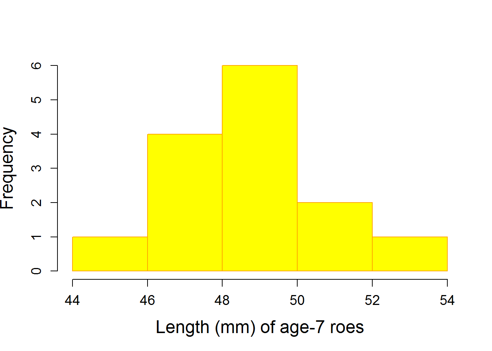
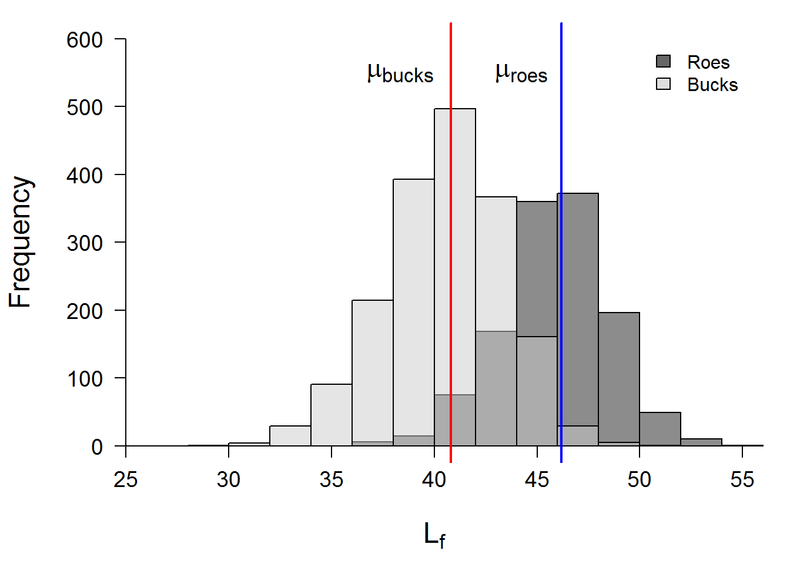

This week we will begin conducting our first statistical tests! We are going to start small and simple, and we will build complexity during the remainder of the semester. We will also start to make more use of some of the programming techniques that you have been developing, and we will build a foundation for moving into regression models in coming weeks.
We’ll start with some simple methods for testing hypotheses about sampling distributions this week. Although relatively limited in scope within the fields of biology and ecology, these tend to be fairly robust tests, and can be powerful tools if studies are designed thoughtfully. For this week, we will focus on implementation of one-sample t-tests, two-sample t-tests, Wilcox tests, and frequency analysis using Pearson’s chi-squared test. Within the context of the assumptions of these tests we will also discuss the F-test and the Shapiro-Wilk test of normality.
Sometimes, we are interested in simply knowing whether or not the measurements we’ve obtained from an individual or a group are representative of a larger population. For example, we may have a ‘control’ group in an experiment and we want to know if the group is truly representative of the population average.
Let’s start with a simple example of how we might do this, and what the results actually mean. We’ll use some data from the best fish, American Shad Alosa sapidissima in the Connecticut River, USA for this example.
shad = read.csv('shad.txt')To start with, we will check to see if the length of age-7 females is the same as the population mean for the Connecticut River population.
our_test = t.test(
shad$Length[shad$Age==7 & shad$Sex=='R'],
alternative='two.sided',
mu=mean(shad$Length),
paired = FALSE,
var.equal = FALSE,
conf.level = 0.95
)
print(our_test)
One Sample t-test
data: shad$Length[shad$Age == 7 & shad$Sex == "R"]
t = 10.727, df = 13, p-value = 7.919e-08
alternative hypothesis: true mean is not equal to 43.02295
95 percent confidence interval:
47.79631 50.20369
sample estimates:
mean of x
49 Okay, so what does that mean???
First, let’s look at what we’ve done here.
We’ve conducted a one-sample t-test.
The null hypothesis (H0) was that the sample (age-7 roes) did not differ in length from the mean of the population. This is because we stated no specific alternative hypothesis when we executed the t-test above. If we had used a different alternative hypothesis (i.e. greater or less in the argument alternative) then our null would be formalized as:
H0: ‘The length of age-7 roes is not significantly greater (or less) than the population mean’.
We specify paired = FALSE because this is a one-sample test (R knows anyway based on the next argument), but also because we don’t have matching cases that we specifically want to compare. We tell R that we are not assuming that the variances are equal because it is a one-sample test and the population variance is not specified. Finally, we specify the confidence level. Here, we are telling R that we want to know the result with a confidence level of 95% (0.95). This corresponds to a Type-I error rate (\(\alpha\)) of 0.05. This means we are looking for p < 0.05 to conclude that the sample is in fact different from the population mean.
R stores the output of this statistical test as an object, and you can reference any part of that object by name or index, like this:
# Like so many other models objects, this is stored as a list:
str(our_test)
List of 9
$ statistic : Named num 10.7
..- attr(*, "names")= chr "t"
$ parameter : Named num 13
..- attr(*, "names")= chr "df"
$ p.value : num 7.92e-08
$ conf.int : atomic [1:2] 47.8 50.2
..- attr(*, "conf.level")= num 0.95
$ estimate : Named num 49
..- attr(*, "names")= chr "mean of x"
$ null.value : Named num 43
..- attr(*, "names")= chr "mean"
$ alternative: chr "two.sided"
$ method : chr "One Sample t-test"
$ data.name : chr "shad$Length[shad$Age == 7 & shad$Sex == \"R\"]"
- attr(*, "class")= chr "htest"We can just look at the names if there are specific pieces in which we are interested. For example, if we were using boot-strapping methods to construct a confidence interval on the p-value, we could extract the p-value for each run of a simulation:
# Shows us the names of the things inside the model list
names(our_test)
[1] "statistic" "parameter" "p.value" "conf.int" "estimate"
[6] "null.value" "alternative" "method" "data.name"
# This stores our p-value to an object for use
p_out = our_test$p.value
# And of course we can look at it
print(p_out)
[1] 7.918926e-08Now we can go through the output as it is displayed by:
# Print a summary of the test
print(our_test)
One Sample t-test
data: shad$Length[shad$Age == 7 & shad$Sex == "R"]
t = 10.727, df = 13, p-value = 7.919e-08
alternative hypothesis: true mean is not equal to 43.02295
95 percent confidence interval:
47.79631 50.20369
sample estimates:
mean of x
49
# Or we can look at the names of the things inside the object:
names(our_test)
[1] "statistic" "parameter" "p.value" "conf.int" "estimate"
[6] "null.value" "alternative" "method" "data.name" The first line of the output gives us the actual data that with which we are working- nothing of interest here other than a quick sanity check until later on in the course.
The second line shows the ‘statistics’ that we are interested in: t, the test statistic for the t-test.
The df, or degrees of freedom, is the number of observations in the sample, minus the number of parameters that we are estimating (in this case, just one: the mean).
Our p-value is the probability of observing data that are more extreme than what we observed if the null hypothesis is in fact true (i.e. the probability that rejection of the null is inappropriate).
Alternative hypothesis: sample mean is not equal to population mean
95% CI for the estimated parameter (the mean difference).
The parameter estimate. In this case, the mean length of age-7 roes.
It’s always important for us to think about the assumptions that we are making when conducting a statistical test. First, there are implicit assumptions that we make: e.g., the data are representative and were collected in a random manner in this case. Then, there are explicit assumptions that we make in specific tests.
For the one-sample t-test, the assumption that we really care about is:
The t-test is generally robust to violations of this assumption provided that sample sizes are large enough. But, it is always good to check. In particular, when we are working with small sample sizes like this example (n = 14), we should really make sure that things look okay.
One simple way to gauge assumptions of normality is to look at a plot of the data. As you will see later, we are usually concerned with the residuals, but we can look at the actual data here because we have only two groups and no continuous covariates.
hist(shad$Length[shad$Age == 7 & shad$Sex == "R"],
col='yellow',
border='orange', cex.axis=1.15, cex.lab=1.5,
xlab='Length (mm) of age-7 roes', main='')
# Hmmm...looks totally normal, but let's make sureThe Shapiro-Wilk test is commonly used to test normality of a distribution as a check of assumptions. We can use this to test whether our data deviate from normal in the following manner:
shapiro.test(shad$Length[shad$Age == 7 & shad$Sex == "R"])
Shapiro-Wilk normality test
data: shad$Length[shad$Age == 7 & shad$Sex == "R"]
W = 0.98014, p-value = 0.9756Okay, we have a couple things going on here:
First, note that the test statistic is the W statistic.
Second, we have a p-value of 0.9756. Oh, no! Wait, what does that mean? For this test, we actually don’t want p < 0.05 if we are relying on assumptions of normality, so this is a ‘good’ thing. But, it doesn’t necessarily mean that the length of age-7 roes is normally distributed. Rather, it means that the sample we have collected is normal enough for a t-test!
What if our data were not normal, but we still had continuous data? Are we up that proverbial creek without a paddle, or can we salvage the mess and move on with life? Don’t worry, there’s an app for that…
You can think of the Wilcox test as a non-parametric version of the t-test. Here, we are checking for shifts in the median (not the mean) of one or more samples.
Why is this? Think back to our example of the negative binomial distribution during discussions of probability distributions…The mean of a non-normal distribution is not always a useful descriptor of the probability mass under a distribution (it still describes ‘central tendancy’ but does not necessarily describe the place where ‘most of the data are’). But, the median always (as in always, always, always) describes central tendency of the data, so we can pretty much use if for describing any probability distribution. This is because the median is defined as the “middle” value. That is, half of the data should fall on either side of the median.
…back to the Wilcox test.
# First, do this and have a quick read:
?wilcox.testNow we can actually run a test to see if the median length of age-7 roes is statistically different from the median value of length in the Connecticut River population of American Shad.
wilcox.test(
shad$Length[shad$Age==7 & shad$Sex=='R'],
mu=median(shad$Length),
alternative = 'greater', # Note that I use a different alternative here!
exact = FALSE # Not much data, so exact not really appropriate
)
Wilcoxon signed rank test with continuity correction
data: shad$Length[shad$Age == 7 & shad$Sex == "R"]
V = 105, p-value = 0.0005439
alternative hypothesis: true location is greater than 43Interpretting the results is essentially the same as for the t-test, but without the degrees of freedom, so we won’t belabor this. Importantly, the test, being robust to any distributional assumptions, should also (and does) tell us that the length of age-7 roes is significantly larger than the population mean (or median- whichever we choose to use).
Okay, with that out of the way, now we can compare two groups to see if they are from different statistical (if not biological) populations.
Let’s keep working with the shad data for now for the sake of consistency. But, now we want to know if there is a difference in mean length of males (‘bucks’) and females (‘roes’). This is a common type of boring question that we might ask with these tests (I didn’t say that).
The syntax is relatively straightforward, and is similar to what we used above, except that now we have two groups so we will replace mu and change some of the options.
our_paired_test = t.test(
x = shad$Length[shad$Sex=='R'], # Group 1
y = shad$Length[shad$Sex=='B'], # Group 2
alternative='two.sided', # Let's say we know nothing
paired = FALSE, # NOTE: 2-sample test, not "paired"
var.equal = FALSE, # We make no variance assumption
conf.level = 0.95 # Alpha = 0.05
)
print(our_paired_test)
Welch Two Sample t-test
data: shad$Length[shad$Sex == "R"] and shad$Length[shad$Sex == "B"]
t = 53.314, df = 2866.3, p-value < 2.2e-16
alternative hypothesis: true difference in means is not equal to 0
95 percent confidence interval:
5.177349 5.572715
sample estimates:
mean of x mean of y
46.18691 40.81188 The interpretation of the results is much the same as with the one-sample t-test, except that we are now looking at the null hypothesis that there is no difference between groups.
We have found that the two groups are ‘significantly different’. Who cares? Which one is bigger for cyrin’ out loud?
This is why it’s good to specify the arguments by name in the call to the function, like we did above:
x is roes
y is bucks
Roes are significantly larger than bucks and that the probability of our being wrong about this is very low.
Now that we are using two samples, we should be cognizant that this test assumes equal variances unless we explicitly account for it as we did above.
Let’s test it:
# We'll make our variables into objects so
# we don't have to type as much
x = shad$Length[shad$Sex=='R'] # Group 1
y = shad$Length[shad$Sex=='B'] # Group 2
# Now we will test the null hypothesis that
# there is no difference in variance between
# groups using an F test. To do this, the F test takes
# the ratio of variances (this is basically an ANOVA!)
var.test(x=x, y=y)
F test to compare two variances
data: x and y
F = 0.80019, num df = 1252, denom df = 1792, p-value = 2.203e-05
alternative hypothesis: true ratio of variances is not equal to 1
95 percent confidence interval:
0.7228317 0.8866513
sample estimates:
ratio of variances
0.8001867 Wow, this is way to easy. I hope that you are beginning to understand the GLORY OF R. This test could be a real pain in other software programs, and may not even be an option in many.
Back on topic…Our variance test shows that the variances are different. More formally:
“The value of the F statistic is sufficiently large for us to reject the null hypothesis that there is no difference in the variances between groups”
That just sounds cooler, doesn’t it?
Sooo…it’s a good thing we assumed that the variances were unequal!
Yes, we are still worried about this one because of the reasons given in the previous section. We can check this the same way as before. End of section.
If we were in violation of normality, we would use the Wilcox test to test for shifts in the central tendancy here. I will not go through the whole thing again here, but I will note that the syntax is very much the same to that of the t-test now:
# Here, I am using the variables we
# created previously for simplicity
wilcox.test(x, y)
Wilcoxon rank sum test with continuity correction
data: x and y
W = 2061200, p-value < 2.2e-16
alternative hypothesis: true location shift is not equal to 0As expected, this test also shows that the two samples differ significantly with respect to their central tendancies.
Note: because we do not have paired samples, this is actually a special case of the Wilcoxon rank-sum test and defaults to the more general ‘Mann-Whitney’ test.
While it is important to report the test statistics, df, etc., it can be just as meaningful to give the sample means (reported in the t.test) and show a graph. Remember: don’t make crappy graphs. Be proud of your results.
# Set the margins for the plotting window
par(mar=c(4.5, 4.5, 1, 1))
# Make a histogram of x with transparent grey-scale colors
hist(x, col=rgb(0.1,0.1,0.1,0.5), xlim = c(25,55), ylim=c(0,600),
main='', xlab=expression(L[f]), yaxt='n', xaxt='n', cex.lab=1.5)
# Add the histogram for y
hist(y, col=rgb(0.8,0.8,0.8,0.5), add=TRUE)
# Add the x-axis and make it cross the y at zero, cex is text increase
axis(side=1, pos=0, cex.axis=1.15)
# Add the y-axis crossing the x at 25, with rotated labels
axis(side=2, pos=25, las=2, cex.axis=1.15)
# add a vertical line showing the mean for roes
abline(v=mean(x), col='blue', lwd=2)
# add a vertical line showing the mean for roes
abline(v=mean(y), col='red', lwd=2)
# Add the mean for each sex to the grapch.
text(x = mean(x), y=550, expression(paste(mu['roes'])), adj=1.25, cex=1.5)
text(x = mean(y), y=550, expression(paste(mu['bucks'])), adj=1.25, cex=1.5)
# Add a legend to the chart
legend(x=50, y=600, legend=c('Roes', 'Bucks'), fill=c('gray40', 'gray87'),
col='black', bty='n')
Now, what if we didn’t collect very good data, or we binned our data into low-resolution categories for the sake of ease in our study design? Often, and for a variety of reasons other than crappy data collection, we want to compare frequencies of events between two (or more) groups. We may even design studies specifically to test these kinds of hypotheses when we think about rates, for example.
The simplest way to test for differences in the frequency of a response between two groups is (some would argue) the chi-squared test.
Let’s say we want to know if there are differences in age strucures between bucks and roes in our shad data. More formally: does the frequency of fish in each age class vary by sex?
This is a straightforward test:
# Run the test
chi_test = chisq.test(shad$Sex, shad$Age)
# And, bam! We see that their is a difference in the frequency of fish
# in each age class between sexes.
chi_test
Pearson's Chi-squared test
data: shad$Sex and shad$Age
X-squared = 419.01, df = 4, p-value < 2.2e-16
# How to show the differences?
# The table of observed values can be helpful
# Remember, all models are objects in R
names(chi_test)
[1] "statistic" "parameter" "p.value" "method" "data.name" "observed"
[7] "expected" "residuals" "stdres"
# Prints the cross-tab for number at age by sex
chi_test$observed
shad$Age
shad$Sex 3 4 5 6 7
B 255 848 579 108 3
R 0 361 658 220 14
# You can compare this to the expected frequencies:
chi_test$expected
shad$Age
shad$Sex 3 4 5 6 7
B 150.1034 711.6668 728.1487 193.0742 10.006894
R 104.8966 497.3332 508.8513 134.9258 6.993106Note: without knowing how fish were sampled (randomly, stratified, etc.), we would not be able to conduct this analysis because it may be possible that the design intentionally sampled different frequencies of individuals of each sex in each age class. Here, we will assume that the sample is representative of the population.
This work is licensed under a Creative Commons Attribution 4.0 International License.